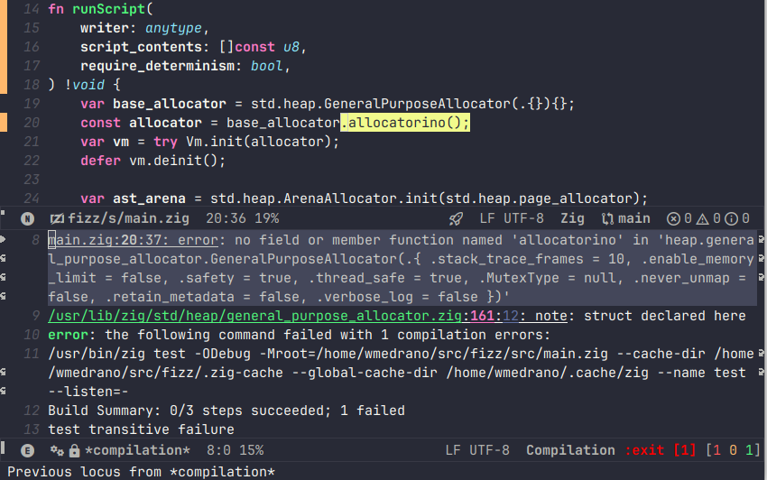
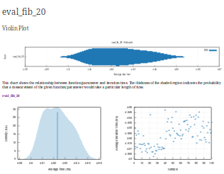
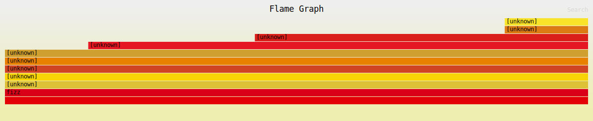

Zigging Out
Table of Contents
1. Zigging Out
1.1. Introduction
1.1.1. Rust Background
As a Rust developer, I've had it. I've designed my last type system, hacked around my last borrow/ownership issue and will claim back some CPU cycles. Hyperbole aside, I've been developing with Rust since early 2016 and have mostly enjoyed it. The type system and ownership model has been good for my development as a programmer. It has made me aware of many common memory issues and race conditions. Prior to this, I was used to debugging segfaults and invalidated objects in C++ and sometimes Go. In the beginning, Rust lacked lots of library and had an ecosystem that was easily eclipsed by the more mature languages. However, at this point, I consider it to have one of the most polished ecosystem in certain niches. Some of my favorite libraries include:
- https://ratatui.rs/ - TUI library.
- https://rapier.rs/ - Physics engine.
- https://tree-sitter.github.io/tree-sitter/#language-bindings - Parsing library built in C, but has a great Rust API.
Despite how good Rust is, I'm reaching for a new low level programming language. The main reason for this is to try something new, but there are some things about Rust I'm happy to take a break from like:
- Large refactors. Rust's rigid type system (where lifetime is part of the type) often necessitates more rewrites than other programming languages I'm comfortable in (namely Go/C++/Clojure).
- Some things are a hassle in plain Rust. Something like implementing
a garbage collector feels very wrong in Rust.
unsafecan be used, but it doesn't feel quite as "Rusty".
1.1.2. Why Zig
This is arbitrary. I've heard of Zig. I've listened to some random
talks. The creator, Andrew Kelley seems like an enthusiastic guy. I
was able to sudo dnf install zig and things worked without much
friction. This is a great recipe to get started. For some real
reasons, here are some things I like about Zig:
- Good C interop story. If there's something that I don't want to write, I can probably reach for a C library.
- Its low level. As a control freak, I like to know my function call stack, where allocations happen, and how my memory is laid out. Every once in a while I get the urge to pick up something like Kotlin, but I know I'd miss the low level mental model too much.
- Developer velocity is valued. From interviews, it seems that getting fast iteration times VIA fast compile times is a priority.
- It's an underdog language. Zig is the passion project of Andrew Kelley and is not funded by a major corporation. Despite this, Zig has a few people working on it full and has developed a great language.
1.2. Zig Features
1.2.1. Lazy Compiler
Zig has one of the laziest compilers. During compilation, only things that are referenced are compiled. Additionally, some things can be evaluated at compile-time which may prune some code paths from even compiling. The following still compiles!
const Struct = struct { x: i64 = 0, pub fn badFunction(self: *Struct) void { return self.y; } }; pub fn main() void { const s = Struct{}; if (false) { s.functionThatDoesNotExist(); } }
badFunctionshould not compile asStructdoes not have a member calledy. However, it is not referenced so Zig prunes its compilation.s.functionThatDoesNotExist()is known to never be called, even at compile time. Theifstatement is evaluated over aboolthat is known at comptime. It's evaluated and the dead code path is eliminated.
I did not expect the Zig compiler to be extremely lazy. In this sense,
it reminds me of a scripting language. I expect compiled languages to
not compile on the above. A scripting language would still run, but it
would fail at runtime if one of the bad code paths is taken. Zig is
somewhere in the middle. The program compiles because Zig determines
that the codepath is unreachable. However, compilation fails if if
(false) is changed to if (true) or badFunction is referenced.
I think I know why this feature exists. The standard library itself
has lots of conditional compilations. For example, switch
(builtin.os.tag) is evaluated at compile time. There are lots of dead
branches for each of the non-target OS branches.
Do I like this? It's definitely necessary for the way that Zig handles metaprogramming. In practice this is annoying under the following scenario:
- I have a function definition that is unused.
- I make breaking changes to an API. This affects the unused function definition.
- I use the "unused function". It's somehow broken.
Although annoying, this hasn't been a deal breaker. Perhaps future tooling will help with this use case.
So are there any advantages to the laziness? Can it lead to faster compile times? At the moment, I don't know. It seems like compiling just what's needed could be good. Especially for a scenario where there is a large code base, but you just want to test a single scenario. At work, I commonly wait for our large code base to compile gigabytes of unused data just for my tiny test case. It's a large source of developer unvelocity.
1.2.2. Explicit Memory Allocations
In Zig, memory allocations are explicitly managed. You pass in the
appropriate allocator for each function call. Generally you want to
use an instance of std.heap.GeneralPurposeAllocator, but in in
tests, you should use std.testing.allocator identify and debug
memory leaks.
Zig was the first time in years I've had to worry about cleaning up memory, and I did not do well. With some time, I improved at least a little bit. My current flow for memory management is:
- Write the code. Throw in some lazy cleanup code with
errdeferanddefer. a. While writing, think about what unit tests I should write. - Write the unit tests. Depend on
std.testing.allocatorto provide debug details on memory leaks.
Memory leaks were the most common error. The hardest cases to clean up was partially built objects whose construction was aborted due to an error. Not that bad, but sometimes I did have some deadly use after frees to debug.
pub const Ir = union(enum) { constant: Const, define: struct { name: []const u8, expr: *Ir }, import_module: struct { path: []const u8 }, deref: []const u8, function_call: struct { function: *Ir, args: []*Ir }, if_expr: struct { predicate: *Ir, true_expr: *Ir, false_expr: ?*Ir }, lambda: struct { name: []const u8, args: [][]const u8, exprs: []*Ir }, ret: struct { exprs: []*Ir }, }; test "nested badly formed lambda produces error" { // This unit test helped me clean up the partially formed `*Ir` objects. try std.testing.expectError( Ir.Error.SyntaxError, Ir.initStrExpr(std.testing.allocator, "(define foo (lambda () (lambda ())))"), ); }
- Arenas
- Arena Refresher
For a quick refresher, a program may ask the memory allocator for memory each time it is called. The memory allocator uses some algorithm along with syscalls to give the program memory. Once the program no longer needs the memory, it gives it back to the memory allocator at which point the memory allocator can give it back to the OS or reclaim it for later use (or leave it unused due to heavy memory fragmentation).
Each memory allocation and deallocation in the fancy allocator has some performance impact. However, things become simpler in an arena. The memory arena is essentially a block of memory. When the program requests memory, then it is received from the next block of memory. The interesting part is that when the program wants to give back memory to the arena, nothing happens. The trick to arena is that the memory must be freed all at once. This simplifies the memory allocation strategy since:
- Allocations require simple pointer increments in the block of memory.
- Deallocations have no cost.
Arenas are typically clunky in programming languages. I've used arenas a few times, and it has always felt awkward each time. Arenas usually come in when trying to squeeze every last bit of performance out of code so it never occurred to me that arenas could be clean.
- Arenas In Practice
Arena's are usually used when trying to squeeze out every little bit of performance out of a program. In the instances I've tried, arenas have been very clunky. I've tried out Go arenas (experimental) which did not support arenas for
mapobjects andC++protobufs which were ok-ish. The interesting part about the protobuf use case is that our dataset was very nested. However, the arena data was embedded into each proto message. I didn't look at the internals, but over a lot of objects, having a pointer may add up and destroy some cache locality.The clunkiness such as Go
mapnot being supported andC++protobufs requiring extra overhead is partly because memory allocators are taken for granted. In 99.99% of use cases, some default allocator should be used. However, for the extra use cases, not enough room has been made to fit in the implementation.In Zig, it was pretty trivial to put in an arena in some cases. This is because Zig encourages passing allocators instead of relying on an implicit builtin. In some callsite, I had a collection of big one time allocations and many small allocations. Slapping on an arena allocator was trivial. Instead of passing the
self.allocator()object that was in scope, I wrapped things in an arena:fn arenaExample() { // ... // Create an arena that will be freed upon exiting the function. var arena = std.heap.ArenaAllocator.init(self.allocator()); defer arena.deinit(); const file_size_limit = 64 * 1024 * 1024; const contents = std.fs.cwd().readFileAlloc(arena.allocator(), full_path, file_size_limit) catch return Error.FileError; const ast = Ast.initWithStr(arena.allocator(), contents) catch return Error.SyntaxError; var module_ok = false; const new_module = self.getOrCreateModule(.{ .name = full_path }) catch return Error.RuntimeError; errdefer if (!module_ok) self.deleteModule(new_module) catch {}; const ir = Ir.init(arena.allocator(), ast.asts) catch return Error.RuntimeError; var compiler = try Compiler.initModule(arena.allocator(), self, new_module); const module_bytecode = compiler.compile(ir) catch Error.RuntimeError; try self.evalNoReset(try module_bytecode, &.{}); module_ok = true; try module.setModuleAlias(self.allocator(), module_alias, new_module); }
- Arena Refresher
1.2.3. No Interfaces, we have ducktyping at home
Most languages that take generic parameters have the concept of an
interface. For example, in Rust, double speak for an Animal can be
implemented like so:
pub trait Animal { fn speak(&self); } impl Animal for Duck { fn speak(&self) { println!("quack!") } } fn double_speak(a: &impl Animal) { a.speak(); a.speak(); }
In the above, the double_speak function can be implemented by any
type. If you want to create an Animal, it's easy to read the trait
specification and implement it. If something goes wrong, a helpful
compiler error is displayed.
In Zig, there is no explicit contract, it is implicit. The implementation of the above would be:
const Duck = struct{ pub fn speak(_: *const Duck) void { std.debug.print("quack!", .{}); } }; fn doubleSpeak(animal: anytype) void { animal.speak(); animal.speak(); }
In the Zig version, doubleSpeak takes a type that can call
speak. You know that by reading the doubleSpeak implementation and
not by reading an interface spec. When I started with Zig, interfaces
were my most wanted feature. After more experience, I'm not even sure
that I want some sort of interface system. Zooming out, the main
benefits from interfaces are:
- Can code to the interface definition which is defined in one place. With Zig, you have to read some documentation or the function implementation to find out what to implement. On the other hand, should I be programming to adhere to interfaces? Is this a large value add?
- Usually good compiler errors. Interfaces can give you
Duck does not implement Animal. In Zig, you get a long stack trace and a message along the lines ofDuck has no callable function speak. Overall, this last point doesn't need interfaces per se. The real feature request is having generally useful compiler errors.
1.2.4. Metaprogramming with Comptime (largely untested)
In most languages, metaprogramming feels completely different than
the language it is programming for. In Zig, comptime is very much
built in Zig. You can have compile time functions that return a
type. Implementations can check type info to produced different code
paths where the alternative branches are pruned before producing a
compile error. It's very fluid.
Simple example:
pub fn MyTypeParameterized(comptime T: type, comptime default_x: T) type { const default_two_x = default_x * 2; return struct { x: T = default_x, two_x: T = default_two_x, }; } test { const T = MyTypeParameterized(f32, 1.0); const obj = MyTypeParameterized(f32, 1.0){}; try std.testing.expectEqualDeep(T{ .x = 1.0, .two_x = 2.0 }, obj); }
I've only seen some simple stuff for now, but am looking forward to exploring the library of functions available at comptime.
1.2.5. C Interoperability (untested)
Zig's C interoperability is clean. Unlike many object-oriented
languages that wrap C concepts in classes with automatic cleanup, Zig
uses defer and errdefer to manage resource cleanup.
This approach eliminates the need for boilerplate adapters often seen
in other languages' C library wrappers. For example, if a C function
provides a newThing function and a deleteThing function, you can
use:
var x = newThing(); defer deleteThing(x);
In C++, developers commonly wrap the API to make it more C++-like. The C++ version of the API may involve writing the following boilerplate:
class ThingWrapper { public: ThingWrapper() { m_thing = newThing(); if (!m_thing) throw std::runtime_error("Failed to create thing"); } ~ThingWrapper() { if (m_thing) deleteThing(m_thing); m_thing = nullptr; } private: void* m_thing; }
C dependencies in Zig should in theory involve normal import and use. No boilerplate or redesign is needed to make the API to be Zig-like. Of course, I have not yet tried this so my experience may change when actually using it in anger.
1.2.6. Tooling
My main setup is Emacs + LSP + M-x compile. Overall, the Zig tooling
is usable, but I'm looking forward to more polish in the future.
- Build System
Although Zig is pre-1.0 and subject to changes, its build system has gained traction, even being adopted by large companies like Uber. In addition to building Zig executables, it includes a C compiler and supports cross compilation.
The Zig build system is centered around a
build.zigfile that is… written in Zig and defines commands. I've done basic things likezig build testandzig build run, but to be honest, I haven't yet got the right mental model for it yet. Install? Executable? Run Artifact? At some point, I'll probably have to learn the build system to include dependencies, especially C deps. Hopefully the documentation is good. I'm not saying that the build system is overkill for Uber, just that I haven't had to build any complex programs in Zig yet. - ZLS - LSP
ZLS is Zig's language server.
ZLS is pretty usable but the compile checks need more work.
- Formatting - Works as well as
zig fmtdoes. - Autocomplete - Misses some stuff, but still useful.
- Go to definition and find references mostly works. This was actually great when programming. The biggest benefit I got was quickly jumping to the definition of items in the standard library. The Zig standard library not only has information that is immediately useful, but it is also a good example of how to program in Zig.
- Compile check - It performs some checks, but misses a lot. Seems like it only performs basic checks on the AST instead of what the compiler would check. Not really that useful yet.
- Formatting - Works as well as
- Compiler Checks
The biggest pain point was ZLS syntax checking. The main workaround to this was to use Emacs' built in
compilefunction which allows me to run a build or test and jump around to the source code for any errors that are parsed.
- Performance Tooling
My main project in Zig is building an interpreted programming language. I started Spore in Rust. Although the implementation is slow, I had a fun and easy time using the following performance tooling:
- cargo criterion - Measure execution time and make fancy plots.
- cargo flamegraph - Build flamegraphs to see where the bottlenecks in my program are.
Unfortunately,
cargo criterionis specific to Rust so I resorted to manually measuring execution time withstd.time.Timeror even the linuxtimeprogram.
I expected a tool like
cargo flamegraphto work, but the result was basically unusable.cargo flamegraphusesperfto collect telemetry from a program and then renders the results as a flamegraph in SVG format. It was able to, but all the functions/symbols were unlabeled.
I'll probably look more into this area. Zig's creator seems to use Valgrind for some performance testing.
1.3. Conclusion
I had a good time using Zig and will continue to tinker around in it in the foreseeable future.
| Like | Language simplicity |
| Memory control | |
| Cautious about | Properly managing memory |
| Deadly use after free bugs | |
| Looking forward to | Using more comptime |
| Using Zig performance tools | |
Zig ditching LLVM for better compile times so that my development changes from 2.5s per test iteration to 0s to unlock superproductivity |
|
| Improved Zig compiler error messages | |
| Begrudgingly will look at | Zig package and build system |
| C interop |